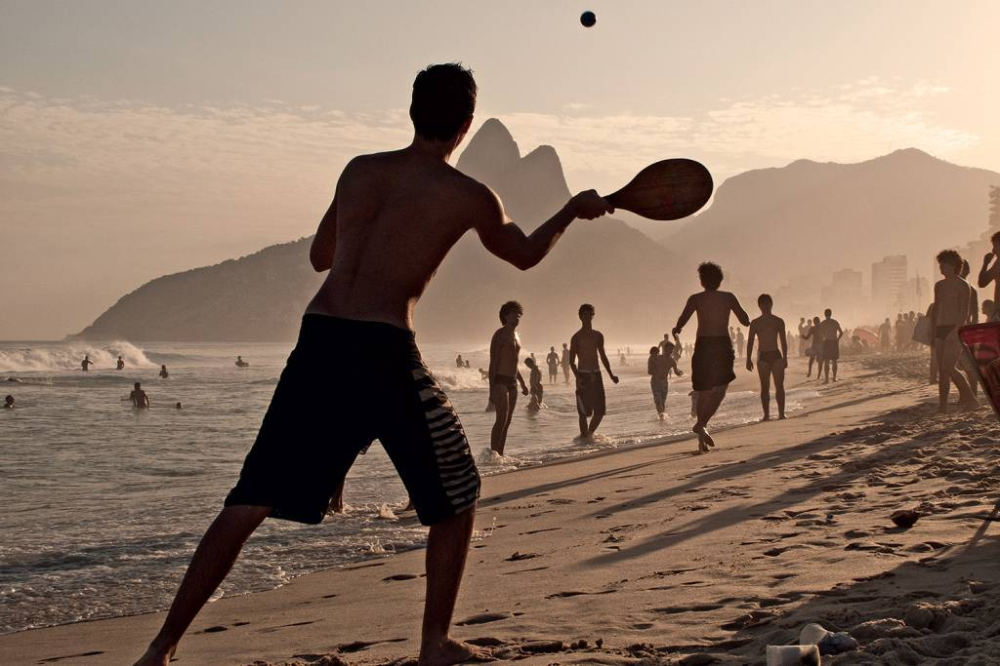

Informações
Ano: 2020
Criado por: Bruno Santos e Hugo Chaves
Gênero: Documentário
Sinopse
Assisti ao documentário "Frescobol - A Sequência" e me peguei pensando em como a gente costuma ignorar coisas tão normais do nosso dia a dia sem perceber a riqueza que existe nelas. O filme usa as areias da praia não só como um cenário bonito de verão, mas como um espaço onde a cultura, o movimento e as relações humanas se encontram de verdade.
O tema central ali é o frescobol entendido como um esporte genuinamente colaborativo e parte da nossa cultura corporal. Três coisas me chamaram muita atenção ao longo da história: primeiro, essa ideia de trocar a rivalidade pela cooperação, já que a graça do jogo é justamente não deixar a bola cair, exigindo que você preste atenção no outro e adapte seu ritmo ao dele; segundo, o papel da praia como um lugar público de convivência e lazer; e terceiro, a própria trajetória da modalidade, que começou como uma simples brincadeira de praia, chegou a ser proibida anos atrás e hoje se organizou com torneios e equipamentos modernos.
Vendo tudo isso, fica fácil puxar ganchos para o que a gente aprende em Educação Física. Cenas que mostram a mecânica dos golpes, a intensidade da batida, o controle da bola e o reflexo dialogam direto com os fundamentos dos esportes de raquete. Outro ponto que bate com a matéria é a ideia de cultura corporal de lazer, que mostra a atividade física como um momento de saúde, alívio do estresse e convivência, longe daquela cobrança chata de desempenho ou competição.
A grande contribuição do filme para a disciplina é justamente provar que nem todo esporte precisa ter um vencedor e um perdedor para ter valor. Para a minha vida pessoal, ficou uma lição bem bonita de empatia: você só joga bem se fizer a pessoa do outro lado jogar bem também. Gostei demais da obra, achei leve, envolvente e com um visual muito gostoso de acompanhar. Para fechar, também deu para reparar em várias questões interseccionais na areia. Ao mesmo tempo em que o filme mostra homens, mulheres, jovens e idosos jogando juntos no mesmo nível, ele deixa transparecer como marcações de classe, raça e território ainda pesam. Afinal, quem consegue frequentar a praia com frequência ou comprar raquetes caras de fibra de carbono costuma ser um recorte bem específico da sociedade, expondo como o acesso ao lazer ainda não é igual para todo mundo.
O que o documentário mostra
- Cooperação
- Lazer
- Coordenação motora
- Reflexos
- Convivência
Imagem

Pessoas jogando "Frescobol" em Copacabana (RJ)
Participantes
| Nome |
|---|
| Breno Palhardi |
| Murilo Gusson |
| Lincoln Tetsuya |